Taller de Herramientas de Modelado: tutorial real de Insight Maker
Nada de simulación casera esta vez: vas a abrir Insight Maker, la herramienta profesional y gratuita, y armar con tus propias manos el mismo modelo de usuarios de una app de la guía anterior — con capturas de pantalla reales, paso a paso, hasta llegar a comparar dos escenarios ("¿qué pasa si...?") en un solo gráfico.
Bienvenido
Esta guía es la continuación directa de Dinámica de Sistemas: Simulación de Stocks y Flujos. Vas a reconstruir el mismo modelo que ya viste ahí — un stock de usuarios activos, con un flujo de referidos entrando y uno de bajas saliendo — pero esta vez en una herramienta profesional de verdad, no en un sandbox armado a mano dentro de la página.
La sesión de hoy es un laboratorio guiado: vas a crear una cuenta gratuita en Insight Maker, armar el diagrama de stock y flujo con sus herramientas reales, correr tu primera simulación, y aprender el mecanismo real que usa la herramienta para comparar dos escenarios en el mismo gráfico — la pregunta "¿qué pasa si..." respondida con números, no con intuición.
🖱️ Clic a clic
Cada paso trae una captura real de la herramienta — vas siguiendo el mismo camino, botón por botón.
🔁 El mismo modelo de siempre
Usuarios activos, referidos, bajas — nada nuevo que aprender de sistemas, solo la herramienta es distinta.
🔀 El objetivo: comparar
El tutorial no termina en "correr una simulación" — termina en tener dos corridas distintas, superpuestas en un mismo gráfico.
Antes de empezar
Insight Maker es 100% gratuito y corre en el navegador — no hay que instalar nada ni pagar nada. Si preferís una alternativa de escritorio, existe también Vensim PLE, la versión gratuita para estudiantes de otro software profesional del mismo tipo — pero este tutorial sigue Insight Maker paso a paso.
- Entrá a insightmaker.com.
- Arriba a la derecha, hacé clic en "Sign Up for a Free Account" (o "Log In" si ya tenés cuenta). Podés crear la cuenta con Google o con un email y contraseña.
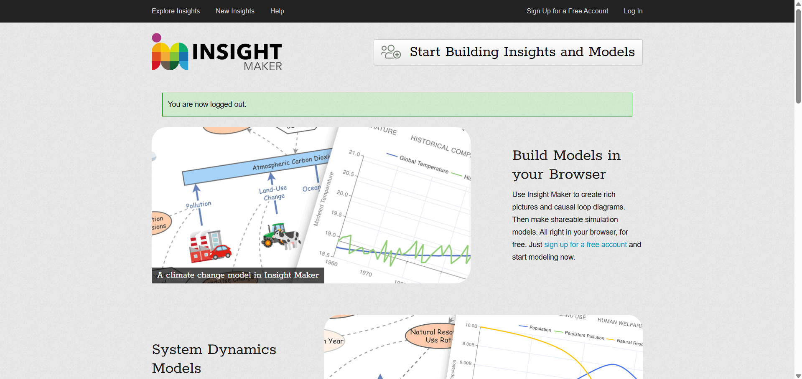
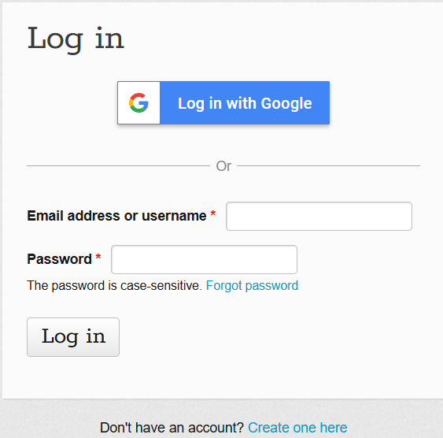
Una vez adentro, vas a ver tu panel — todavía vacío la primera vez — con un botón para crear tu primer modelo.
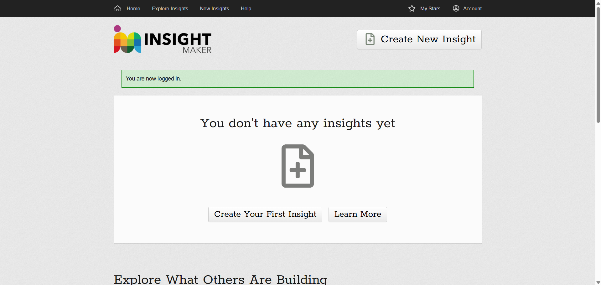
1El lienzo y las herramientas
Al crear un modelo nuevo, Insight Maker abre un editor con un diagrama de ejemplo ya armado (un modelo simple de adopción de un producto) — es solo para que veas la pinta de las cosas, no lo vas a usar.
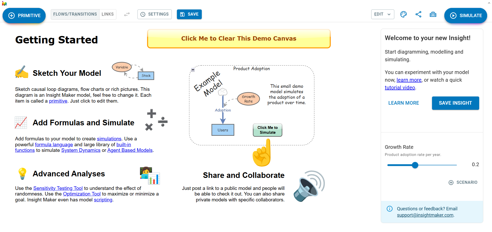
Fijate en la barra de arriba — son las herramientas que vas a usar todo el tutorial:
➕ PRIMITIVE
Agrega un elemento nuevo al lienzo: un Stock, una Variable, etc.
🔀 FLOWS/TRANSITIONS y LINKS
Herramientas para dibujar flujos (entre stocks) y links (conexiones causales) entre elementos.
▶️ SIMULATE
Corre el modelo en el tiempo y muestra los resultados en un gráfico.
Borrá el modelo de ejemplo para empezar de cero: hacé clic en el botón amarillo "Click Me to Clear This Demo Canvas".
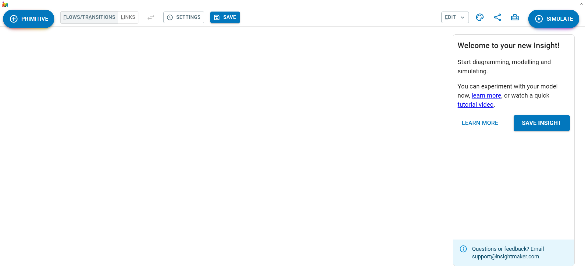
2El stock: Usuarios Activos
Hacé clic en "+ PRIMITIVE" — se despliega un menú con la sección "System Dynamics": Add Stock, Add Variable, Add Converter. Elegí Add Stock.
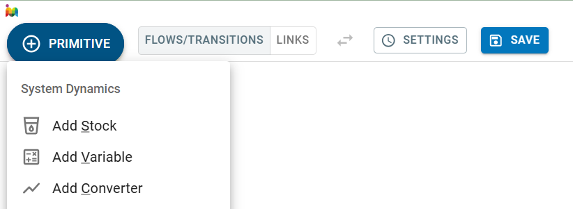
Aparece un rectángulo azul en el lienzo, con el nombre "New Stock" por defecto.
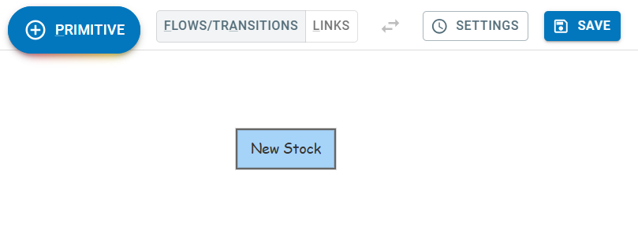
Hacé clic en el stock para seleccionarlo: se abre un panel a la derecha. Cambiá el nombre a "Usuarios Activos" (escribiendo directo sobre el texto del rectángulo, o en el panel) y poné 500 en "Initial Value".
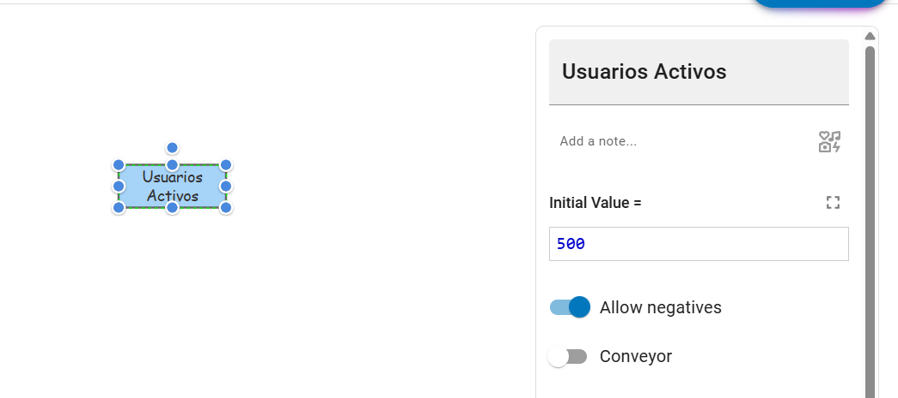
En este modelo, ¿qué representa el rectángulo "Usuarios Activos" que acabás de crear?
3Los dos flujos: Referidos y Bajas
Un stock solo no hace nada — necesita flujos que lo alimenten o lo vacíen. Con la herramienta "FLOWS/TRANSITIONS" activada, hacé clic afuera del stock y arrastrá una flecha hacia adentro de "Usuarios Activos": Insight Maker agrega automáticamente una nube como origen del flujo. Nombralo "Referidos" y, en "Flow Rate", escribí:
[Usuarios Activos]*0.08
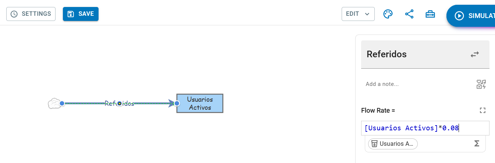
Repetí el mismo mecanismo, pero ahora arrastrando desde el stock hacia afuera (aparece otra nube, del lado de salida). Nombralo "Bajas", con:
[Usuarios Activos]*0.04
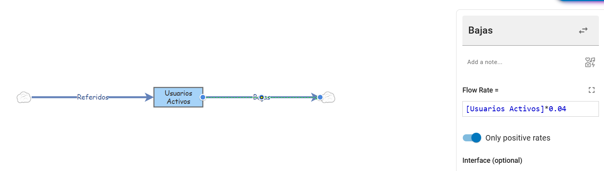
No son ningún stock del modelo — son el símbolo estándar de Dinámica de Sistemas para una fuente o un sumidero infinitos: de donde "vienen" los referidos y hacia donde "van" los que se dan de baja, sin que a este modelo le importe de dónde exactamente. Es la misma idea de "afuera del sistema" que ya viste con el concepto de entorno.
Las nubes en los extremos del diagrama no son ningún stock del modelo. ¿Qué representan?
4Primera simulación
Con el diagrama completo, hacé clic en "SIMULATE" (arriba a la derecha). Se abre una ventana de resultados con el gráfico de "Usuarios Activos" a lo largo del tiempo.
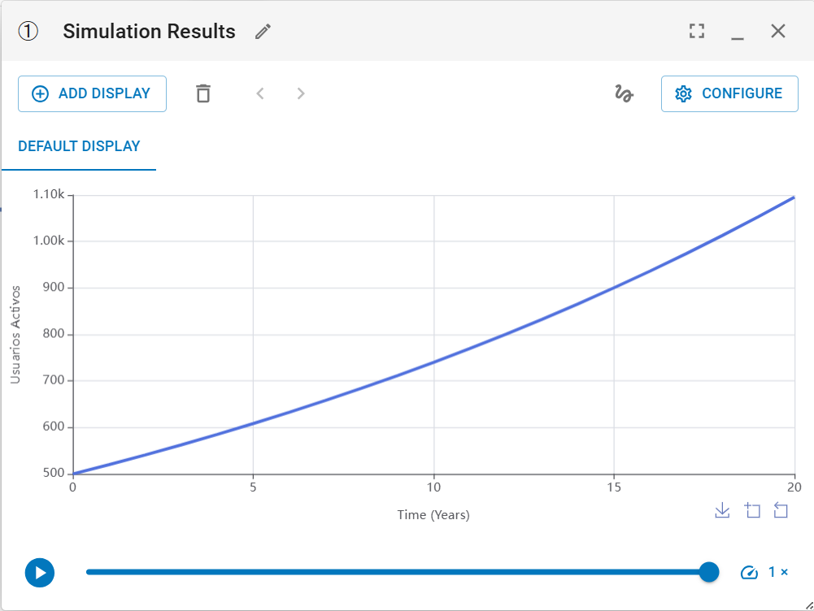
Insight Maker corre, por defecto, una simulación de 20 unidades de tiempo llamadas "Years". Para este tutorial no hace falta cambiar nada — pero si más adelante querés ajustar cuánto dura la simulación o qué unidad de tiempo usa, esas opciones están en el botón "SETTINGS" de la barra de arriba.
5Un valor fijo se vuelve un slider
Ahora mismo, el 0.08 de la tasa de referidos está escrito directo adentro de la fórmula del flujo — para compararlo contra otro valor tendrías que editar esa fórmula a mano cada vez. La forma correcta es sacarlo a una Variable aparte, y convertir esa Variable en un slider.
- "+ PRIMITIVE" → Add Variable. Nombrala "Tasa de Referidos", con Value = 0.08.
- Con la herramienta "LINKS" activada, hacé clic en la Variable y arrastrá hasta el flujo "Referidos" — aparece una flecha punteada conectando ambos.
- Editá la fórmula del flujo "Referidos": reemplazá
[Usuarios Activos]*0.08por[Usuarios Activos]*[Tasa de Referidos]. - Seleccioná la Variable de nuevo y, en su panel, desplegá "Interface (optional)". Activá "Show value slider".
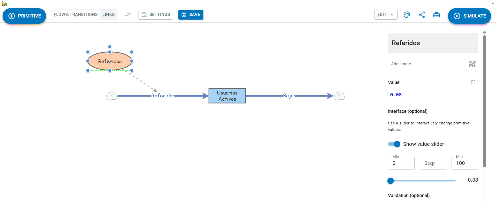
Por defecto, Min queda en 0 y Max en 100 — un rango enorme para un valor como 0.08, que hace el slider poco preciso. Te conviene achicar Max a algo como 0.3 y poner Step en 0.01, para poder moverlo en pasos chicos y precisos.
Hacé clic en un espacio vacío del lienzo para deseleccionar la Variable. El panel de la derecha cambia: ahora muestra el slider en vivo, con un botón "+ SCENARIO" debajo — esa es la pieza que estábamos buscando.
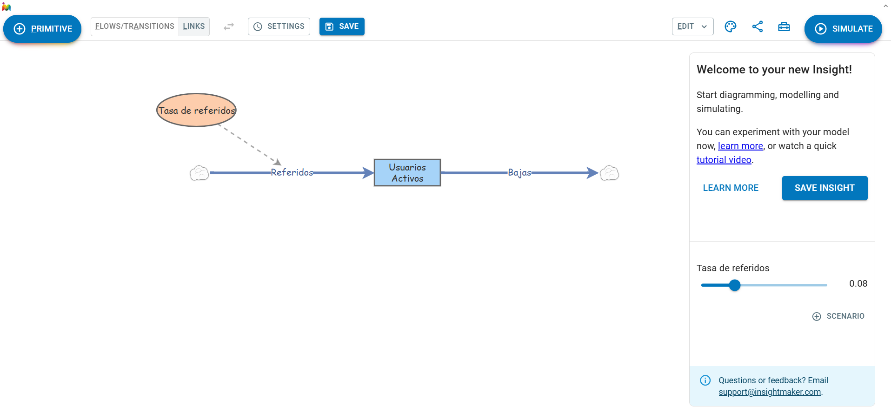
Antes tenías [Usuarios Activos]*0.08 escrito directo en la fórmula del flujo. ¿Por qué convino sacar el 0.08 a una Variable aparte?
6Comparar dos escenarios
Con el slider y el botón "+ SCENARIO" ya armados, este es el mecanismo completo para comparar dos corridas:
- Con el slider en 0.08, hacé clic en "+ SCENARIO" y nombralo "Sin Campaña".
- Subí el slider a 0.15 y hacé clic en "+ SCENARIO" de nuevo — nombralo "Con Campaña".
- Volvé a poner el slider en 0.08 y tocá "SIMULATE" — se abre una ventana de resultados.
- Sin cerrar esa ventana, subí el slider a 0.15 y tocá "SIMULATE" otra vez — se abre una segunda ventana. Insight Maker necesita las dos simulaciones abiertas al mismo tiempo para poder compararlas.
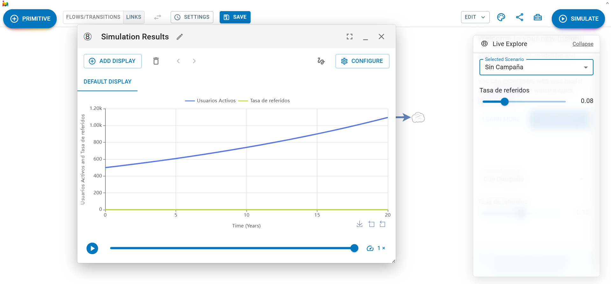
Con las dos ventanas de resultados abiertas, andá a EDIT (arriba a la derecha, al lado del ícono de paleta) y elegí "Compare Results...".
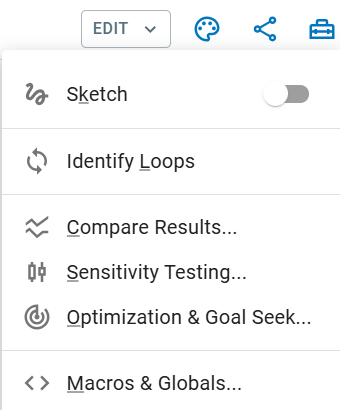
Se abre una ventana "Simulation Results Comparison", con una pestaña por cada primitivo — elegí "USUARIOS ACTIVOS CHART" para ver las dos curvas juntas:
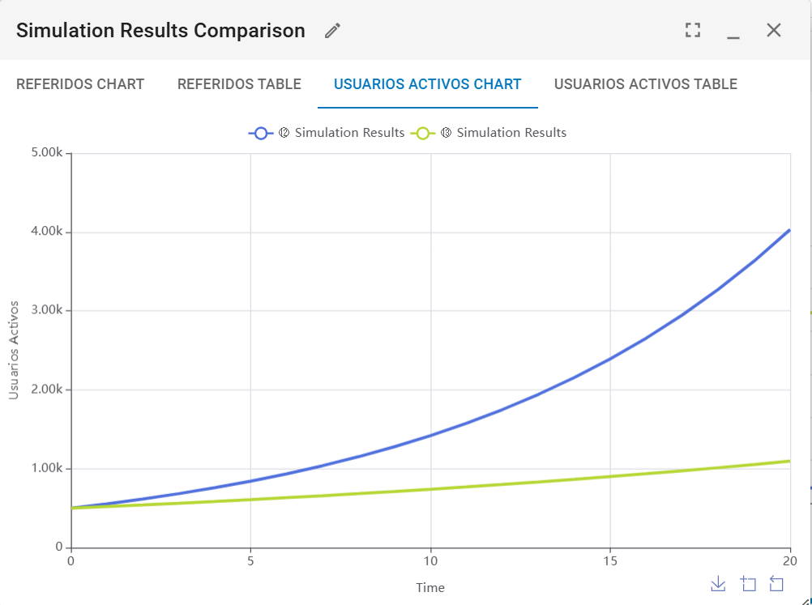
Vas a notar que la leyenda del gráfico dice "Simulation Results" dos veces, sin aclarar cuál es "Sin Campaña" y cuál "Con Campaña". Andate anotando vos mismo el orden en que corriste cada una (o abrí la pestaña "TABLE" al lado de "CHART", para ver los valores exactos de cada corrida) — ninguna herramienta reemplaza del todo llevar tu propio registro.
En el gráfico final, la curva de 0.15 termina en ~4.05k usuarios y la de 0.08 en ~1.10k, ambas arrancando en 500. ¿Qué te dice eso sobre las dos tasas?
Reto final — Tu propia comparación
Ahora te toca a vos, sin capturas de guía. Elegí una de las dos opciones y armala en tu propio Insight Maker:
🏭 El almacén con retraso
Reconstruí el modelo del almacén de Andina Distribuciones de la guía anterior (un stock "Inventario", con "Reposición" y "Despacho"), y compará dos proveedores con distinto tiempo de entrega.
📱 Otra tasa de la app
En el mismo modelo de hoy, agregá un slider para la tasa de bajas (no solo la de referidos) y comparalos con "Compare Results...".
Cuando tengas tus dos escenarios comparados, contá en un par de líneas qué comparaste y qué aprendiste (no se corrige automáticamente — es para que ordenes tu propia conclusión):
No te olvides de tocar "SAVE" antes de cerrar la pestaña. Con el ícono de compartir 🔗 de la barra de arriba podés generar un link para mostrarle tu modelo a alguien más — útil para cuando llegue el proyecto final.
Actividades de repaso
Un repaso del vocabulario y el mecanismo de esta guía. Cada actividad se corrige al instante; tu progreso se guarda automáticamente en este navegador.
Une cada término de Insight Maker con su definición.
¿Cuál es la diferencia entre un Stock y una Variable en Insight Maker?
Para comparar dos escenarios con "Compare Results...", hace falta correr dos simulaciones sin cerrar la primera antes de correr la segunda.
Cheat Sheet
| Insight Maker | Qué es |
|---|---|
| Stock | Rectángulo — cantidad acumulada, solo cambia a través de sus flujos. |
| Flow | Tubería con válvula — tasa de entrada o salida de un stock. |
| Variable | Óvalo — un valor que fijás vos, candidato a convertirse en slider. |
| Cloud (nube) | Fuente o sumidero infinito, fuera del alcance del modelo. |
| Link | Flecha punteada — conecta una Variable con la fórmula que la usa. |
| Interface / slider | Convierte una Variable en un control que se mueve en vivo. |
| Scenario | Una combinación de valores de sliders, guardada con un nombre. |
| Compare Results | Superpone dos o más simulaciones ya corridas, primitivo por primitivo. |
¿Sabías que...?
🛢️ Shell y la crisis del petróleo de 1973
En los años 70, la petrolera Shell fue de las primeras grandes empresas en usar planificación de escenarios en serio: el equipo de Pierre Wack armó varios "qué pasa si..." sobre el precio del petróleo. Cuando la crisis de 1973 golpeó a toda la industria, Shell ya había "corrido" ese escenario mentalmente y reaccionó mucho más rápido que sus competidores.
🌍 El modelo que inspiró "Los límites del crecimiento"
El informe "Los límites del crecimiento" (1972) se construyó simulando un modelo mundial (World3) con un lenguaje ancestro de herramientas como Vensim, creado por el mismo Jay Forrester que fundó la Dinámica de Sistemas.
⚡ "Compare Results" tiene un hermano mayor
En el mismo menú "EDIT" donde encontraste "Compare Results...", está "Sensitivity Testing..." — para cuando no alcanza con comparar 2 escenarios a mano, y querés que la herramienta corra automáticamente cientos de variaciones de un parámetro y te muestre el rango completo de resultados posibles.